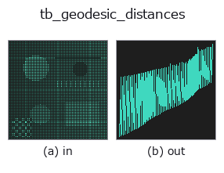

typed op• 数据种类:points → signal
• 调用:fullseye.apply(img, "tb_geodesic_distances", a=0.5, b=0.5)(2-D 的模型是一张图 + 两个标量旋钮 a,b∈[0,1])

*图为在 128×128 合成输入上实际运行的输出。左为输入，右为输出。点云以俯视散点显示(亮度 = z)，一维序列为折线，体数据为沿 z 的最大值投影，视频为中间帧，复数图像为幅值；无法成像的返回值直接显示数值。*
扫描旋钮 a(0.1 / 0.5 / 0.9，另一旋钮取默认):
▸ tb_geodesic_distances: knob a sweep (docs site)
*旋钮 b 不改变输出(实测: 0.1 / 0.5 / 0.9 相同)。*
阶段(前置算子 → 本算子，从左到右):
▸ tb_geodesic_distances: stages (docs site)
换别的图像(合成场景 / 照片 / 硬币。上排为输入，下排为对应输出。旋钮取默认):
▸ tb_geodesic_distances: other inputs (docs site)
从 source 到所有点的测地距离（在 kNN 图上运行 Dijkstra）。→ (N,) float（不可达为 inf）。
> 以下的详细说明为原文 —— 摘要与标题已翻译。
`knn_graph(points, k)` で作った k 近傍グラフ(辺の重み = 点間の Euclid 距離 = 弦長)を
`directed=False で無向化し、scipy.sparse.csgraph.dijkstra` で単一始点最短路を解く。
`d[i] は source から点 i までのグラフ上の経路長で d[source] = 0`、source と繋がっていない
連結成分の点は `inf`。単位は座標の単位そのまま。
• `points`: (N,3) の点群(float64 に変換)。
• `source`: 始点の添字(0..N-1 の整数。範囲外は scipy 側で例外)。
• `k: 近傍数(既定 8)。小さいとグラフが分断されて inf` が増え、大きいと離れた面どうしを
直結する「近道」が生まれて曲面に沿わない距離になる(薄い板の表裏、折り返した面など)。
精度: 辺が弦長なので弧をわずかに過小評価する一方、経路のジグザグが過大評価を生む(モジュール
docstring の Bernstein らの挟み込み評価を参照)。三角メッシュがあるなら近傍数に依存しない
`geodesic_mesh を使う。この距離で均等に間引くには farthest_point_sampling`。
2-D 進化レジストリへ橋渡しした 3d の op `geodesic_distances。実装は同じで、呼び出し規約だけ op(v, a, b) に合わせてある。a が k(既定 8)を振る。b` は未使用。
• 示例数据目录(下载 URL / 许可证) —— 2-D 用 skimage.data(BSD/公有领域)加合成图,3-D 给出真实数据源(Stanford/PDS 等)的下载 URL。
• 算子来历与参考文献 —— 该算子族所依据的研究/方法出处。
下面的程序已确认可以运行(与图相同的输入)。在 Studio 帮助中，此块会变成按钮，可当场加载并运行。
img_to_points 0.50 0.50 tb_geodesic_distances 0.50 0.50
▸ Load this pipeline · Load & run
下面的示例调用的是底层账本算子 geodesic_distances。此桥接算子只是把同一实现适配为 fn(v, a, b) 约定，行为完全相同(只是调用形式不同)。
• geodesic_distance — py -3.11 examples_3d/geodesic_distance.py
signal 作为输入)identity · tb_create_funct_1d_array · tb_smooth_funct_1d_gauss · tb_smooth_funct_1d_mean · tb_derivate_funct_1d · tb_integrate_funct_1d · tb_zero_crossings_funct_1d · tb_abs_funct_1d
typed)tb_points_to_voxel · tb_estimate_point_normals · tb_iss_keypoints · tb_project_points · tb_render_point_depth · tb_statistical_outlier_removal · tb_radius_outlier_removal · tb_voxel_grid_downsample
*Provenance: ops.py — 2D 算子登记表。本条目由 tools/opdocs.py md 自动生成(请勿手工编辑)。*
© 2026 Kazufumi Furuse — Fullseye operator documentation. Licensed under Apache-2.0.
{kind=link}
{kind=link}
{kind=link}